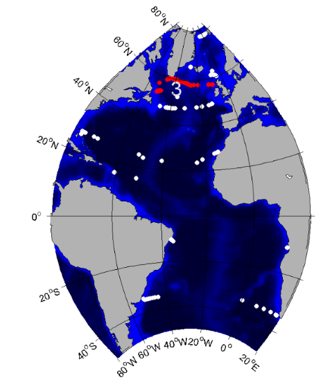
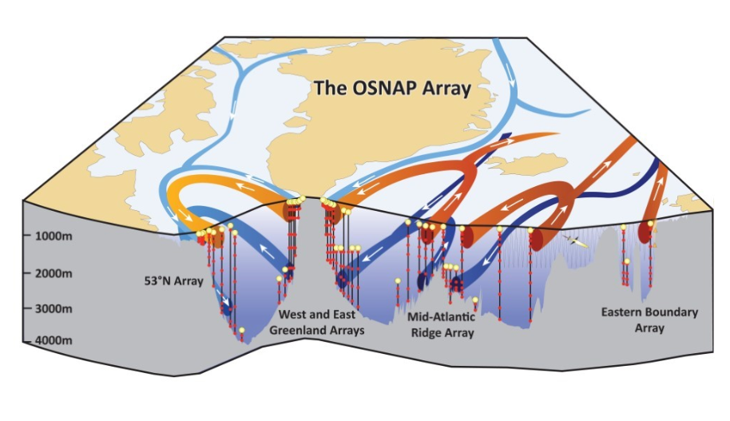
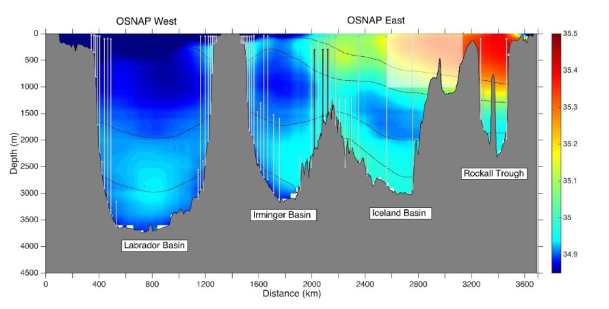
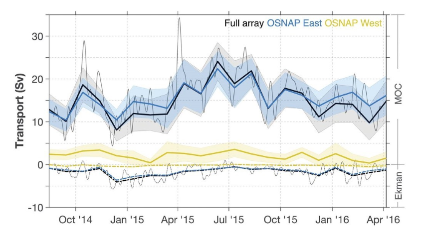

| |||||||||||||
|
2. GSR Greenland Scotland Ridge 3. OSNAP Overturning in the Subpolar North Atlantic Program 4. NOAC North Atlantic Changes 6. MOVE Meridional Overturning Variability Experiment 8. SAMBA-SAMOC South Atlantic Meridional Overturning Circulation
|
OSNAPOverturning in the Subpolar North Atlantic Programhttp://www.o-snap.org/
Brief description of the TMA
The OSNAP TMA is designed to provide a continuous record of the full-water column, trans-basin fluxes of heat, mass and freshwater in the subpolar North Atlantic.
The OSNAP observing system consists of two legs: one extending from southern Labrador to the southwestern tip of Greenland across the mouth of the Labrador Sea (OSNAP West),
and the second from the southeastern tip of Greenland to Scotland (OSNAP East). For more information see http://www.o-snap.org/.

Fig. 1: OSNAP observing system: From west to east: Canadian shelfbreak array and German 53°N western boundary array; US West Greenland boundary array; US/UK East Greenland boundary array; Netherlands western Mid-Atlantic Ridge array; US eastern Mid-Atlantic Ridge array; Chinese glider survey in the Iceland Basin; UK glider survey over the Hatton-Rockall Bank; UK Scottish Slope current array. See also http://www.o-snap.org/observations/configuration/

Fig. 2: OSNAP array superposed on climatological salinity along the OSNAP West and East lines. Color shading is 2005-2012 mean salinity from WOA13; black dashed lines are isopycnals of 27.5, 27.75, 27.8, and 27.88 kg m-3. OSNAP mooring locations (vertical gray lines) and glider domain (shaded white box) are indicated. Vertical black lines over the western flank of the Reykjanes Ridge illustrate three moorings as part of the RREX. Data products: volume transport time seriesFig. 3: MOC and Ekman transport across the OSNAP section. Black, yellow, and blue lines represent the 30-day mean estimates from the full section, OSNAP West, and OSNAP East, respectively, for MOC (solid lines) and Ekman transport (dashed lines). Shading indicates uncertainty in the 30-day means. Uncertainty in the Ekman transports is too small for display. Thin gray lines show the 10-day low-pass filtered daily means for the full OSNAP section. From Lozier et al. (2019) Transport data can be downloaded hereThe DOI is 10.7924/r4z60gf0f at https://www.o-snap.org/observations/data/ The array instrument data are available at https://www.o-snap.org/observations/data/
PublicationsLozier M. S. 1,*, F. Li1,*, S. Bacon2, F. Bahr3, A. S. Bower3, S. A. Cunningham4, M. F. de Jong5, L. de Steur5,†, B. deYoung6, J. Fischer7, S. F. Gary4, B. J. W. Greenan8, N. P. Holliday2, A. Houk9, L. Houpert4, M. E. Inall4,10, W. E. Johns9, H. L. Johnson11, C. Johnson4, J. Karstensen7, G. Koman9, I. A. Le Bras12, X. Lin13, N. Mackay14,‡, D. P. Marshall15, H. Mercier16, M. Oltmanns7, R. S. Pickart3, A. L. Ramsey3, D. Rayner2, F. Straneo12, V. Thierry17, D. J. Torres3, R. G. Williams18, C. Wilson14, J. Yang3, I. Yashayaev8, J. Zhao3,§ (2019) A sea change in our view of overturning in the subpolar North Atlantic, Science, 363, 6426, DOI: 10.1126/science.aau6592 For more publications see https://www.o-snap.org/bibliography/ | ||||||||||||